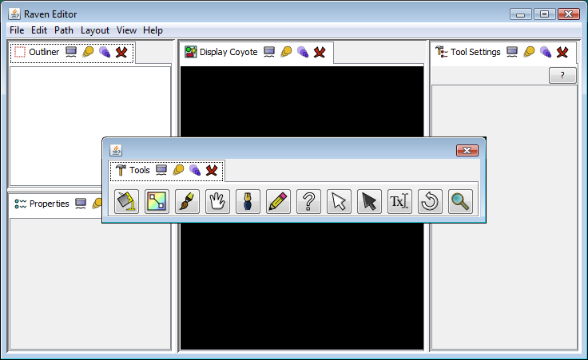
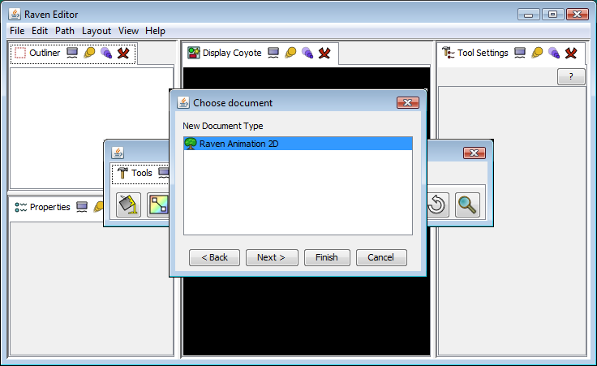
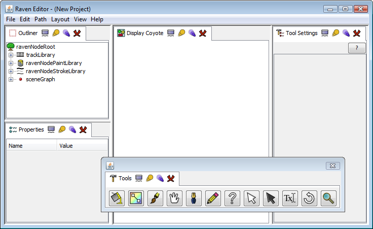

Your first Drawing
Starting Raven
First, start Raven Studio. You can do this either from the webstart page or by downloading and installing Raven on your computer.
When you first start Raven, you should see a window that looks something like this:

This is the default layout that Raven starts with. (You may see something different if this is not the first time you've run the program - Raven will save your current layout whenever you close it and try to restore it the next time you start. More about layouts here.)
Creating a new project
Now let's create a new Raven project. From the main menu select File/New.... The Choose Document window will open. Select Raven Animation 2D as the type of project you want to create and click Finish.

A new project will be created along with an initial scenegraph (which is displayed in the Outliner).

Creating a drawing
Select the Paint Stroke tool (looks like a paint brush) in the Tools palette. Notice that the Tool Settings window changes to display the various options that you can use to alter the brush. Click and drag with your mouse or use a tablet stylus to draw a line in the Display area. You should see your stroke appear in the window.
Practice drawing multiple strokes. Press <ctrl-Z> to undo strokes. Change the tool settings to alter the properties of your brush.

Saving your work
You can save your work by selecting File/Save from the main menu. Raven files end in the suffix .raven. If you omit this, it will be added for you.